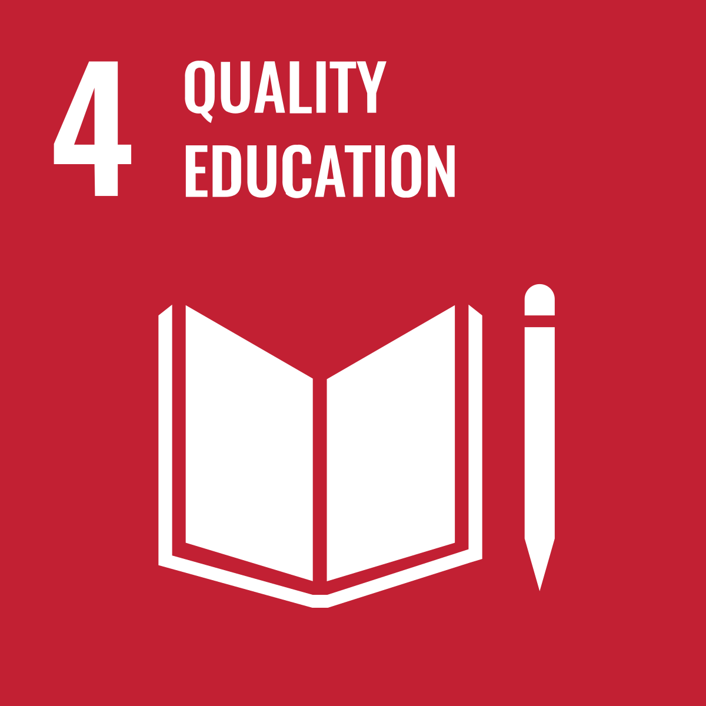
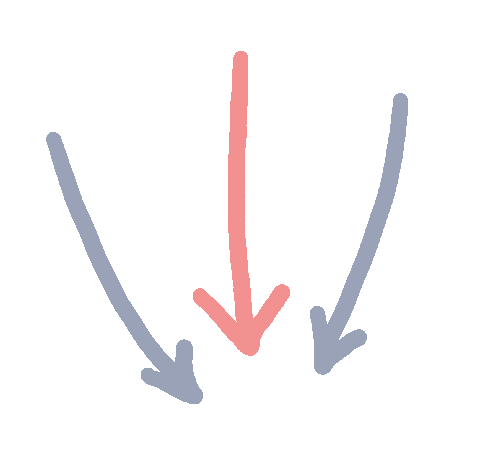
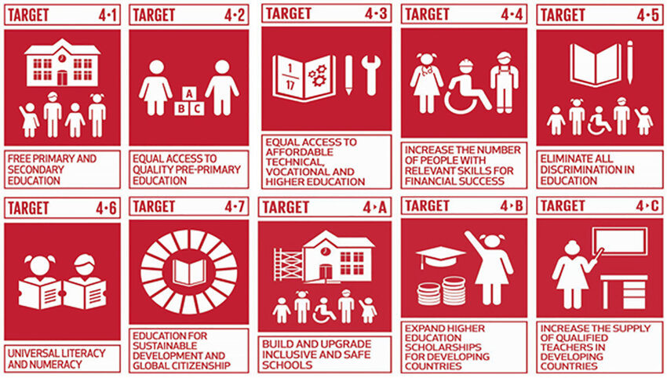

Take Actions Today!
Take Actions Today!

Here's a short introduction of quality education

Take Actions Today!
An example of one of the schools with quality education is SISM!
In the ever-evolving education landscape, the conventional emphasis has moved from exam-focused learning to a more holistic approach. The prerequisites of 21st-century education call for the nurturing of creative, knowledgeable, gritty, and compassionate individuals equipped with the abilities and skills necessary to drive positive global transformation. This unique focus distinguishes SISM as an unparalleled institution. At SISM, we foster an environment of achievement coupled with joy.
Our students exude a profound enthusiasm for learning, striving for academic excellence while actively engaging in a diverse spectrum of co-curricular activities, which shapes them into exceptional future leaders.SISM is well-prepared to equip learners for a fast-changing world that requires continuous value creation. We emphasise developing critical thinking, problem-solving, and communication skills.We believe in the transformative power of our education, helping students unlock their full potential. Our steadfast commitment to student growth and development is our driving force.
--------From SISM official site
© Min Yin , year 8, SISM.